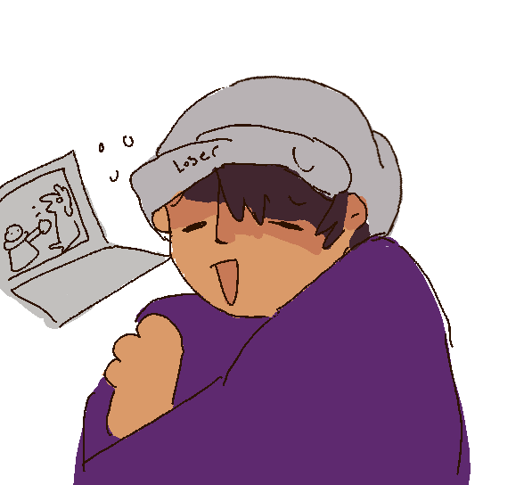

Actually Programing
Im no expert in computers, im really just a novice in these things a lot of my inspirations come from the greats before me. Indie game developers like Toby Fox from undertale and Daiskue Amaya who made Cave Story by himself those two where novice developers whos creations and storys touched the hearts of thousands, i hope that my ideas can be like theres, atleast a little bit!
Teams
Ive had some friends express intrest in helping me out, though im in college right now and I dont expect to go into game development full time, I've commited myself to this as my passion project, I dont think Deadworld will come out anythime soon its still just in the planning stage at the moment, but given enough time I belive ill be able to make somthing my childhood self would have gone crazy over! If your interested we can even collaberate! Just contact me here